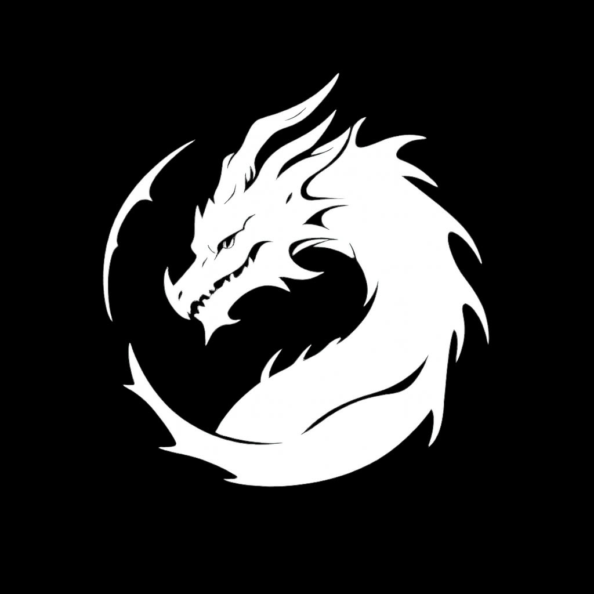

Yamazaki Oni Community
Selamat datang di Yamazaki Oni, komunitas gaming yang menyatukan para gamer Indonesia untuk bermain, berbagi pengalaman, dan menjalin pertemanan. Bagi kami, gaming bukan sekadar hiburan, tetapi juga cara untuk membangun hubungan dan menciptakan kenangan bersama.
Kami percaya bahwa kebersamaan, rasa saling menghargai, dan solidaritas adalah fondasi komunitas yang kuat. Di Yamazaki Oni, kita bukan sekadar teman bermain, melainkan keluarga yang tumbuh dan berkembang bersama.
Gabung SekarangAbout
Yamazaki Oni adalah komunitas game Indonesia yang dibuat oleh pemuda pada 22 Januari 2026. Awal pembuatan Yamazaki Oni, kami bertujuan untuk membuat lingkup tempat bermain game bersama teman kami, namun kami mendapat beberapa perubahan. Awalnya kami dulu bernama ROR, tapi karena melihat nama ROR sudah dipakai oleh banyak orang, kami mengubahnya lagi menjadi Eclipser.
Eclipser adalah versi 2 dari ROR. Pada saat itu Eclipser memiliki 8 anggota yang isinya adalah gamer dari Indonesia yang memang mencari tempat bermain yang bebas secara aman dan tentram, namun Eclipser kembali berevolusi. Evolusi kali ini akan membawa komunitas ini ke masa kayanya, yaitu era Yamazaki.
Yamazaki adalah versi yang lebih matang di antara 2 nama yang dibawakan sebelumnya. Nama Yamazaki awalnya saya gunakan karena saya menonton 1 animasi RP Minecraft Indonesia dan menggunakannya sebagai nama komunitas. Awalnya hanya Yamazaki, tapi berubah ke Yamazaki Oni.
Yamazaki Oni adalah versi terbaru dari komunitas ini. Kematangannya sudah bisa dibilang sangat matang walaupun ada 2 anggota yang di-farewell dan 2 anggota yang di-terminate, dan sekarang Yamazaki Oni memiliki 1 anchor baru, yaitu DC atau kerap disebut D Council.
D Council adalah squad e-sports dari Yamazaki Oni yang resmi ditambahkan pada Jumat, 23 Oktober 2026 pukul 17.00.
Catatan Sejarah
Pada awalnya ada anak bernama Steven (Zephyr) yang membuat komunitas bernama ROR. Dia menambahkan 3 orang lainnya yang bernama Petrus, William, dan Dika. Mereka kerap disebut founding father, walaupun Petrus telah di-farewell karena sedang menuntut ilmu. Kami menghargai apa yang dia pilih untuk sepanjang hidupnya.
Data
- Anggota
- 8
- Peak member
- 14
- WIP project
- Manga
- Complete project
- Make a community for play a game
Aturan Komunitas
- Saling menghormati sesama member.
- Dilarang SARA, ujaran kebencian, dan toxic berlebihan.
- Dilarang spam atau promosi tanpa izin admin.
- Dilarang cheating, hacking, atau jual beli akun tanpa konfirmasi terlebih dahulu dengan admin.
- Tidak ada perkelahian di antara member agar kerukunan tetap terjaga di antara member ke member lainnya.
- Jangan berasa memiliki kuasa diantara yang lain kita semua sama.
- Jangan pernah melakukan candaan fisik yang berlebihan apalagi sampai membawa orang tua kata kasar berlebihan, dan lain lain.
- Ikuti arahan admin dan moderator.
Gabung
Pilih platform favoritmu dan jadi bagian dari keluarga Yamazaki Oni.
Privacy Policy
Terakhir diperbarui: Oktober 2026
1. Pendahuluan
Yamazaki Oni Community menghargai privasi pengunjung. Kebijakan ini menjelaskan bagaimana situs ini memperlakukan informasi Anda saat dikunjungi.
2. Informasi yang Kami Kumpulkan
Situs ini bersifat informatif dan tidak memiliki formulir pendaftaran, akun, atau fitur yang meminta data pribadi seperti nama, email, atau nomor telepon. Penyedia hosting yang kami gunakan dapat mencatat data teknis standar, misalnya alamat IP, jenis browser, dan waktu kunjungan, untuk keperluan keamanan dan statistik dasar.
3. Cookie dan Pelacakan
Kami tidak memakai cookie iklan maupun alat pelacak pihak ketiga di situs ini. Jika di masa depan kami menambahkan layanan analitik atau fitur lain yang memakai cookie, kebijakan ini akan diperbarui.
4. Tautan ke Pihak Ketiga
Situs ini memuat tautan ke Discord, YouTube, TikTok, dan WhatsApp. Saat Anda membuka tautan tersebut, Anda berada di bawah kebijakan privasi dan ketentuan layanan masing-masing platform. Kami tidak mengendalikan dan tidak bertanggung jawab atas pengelolaan data di platform tersebut.
5. Keamanan dalam Komunitas
Informasi yang Anda bagikan di server Discord atau grup WhatsApp kami dapat dilihat oleh member lain. Jangan membagikan kata sandi, kode OTP, atau data sensitif kepada siapa pun, termasuk kepada pihak yang mengaku sebagai admin. Admin tidak akan pernah meminta data tersebut.
6. Anak-anak
Situs dan komunitas ini tidak ditujukan untuk anak di bawah usia 13 tahun. Kami tidak dengan sengaja mengumpulkan data dari anak di bawah usia tersebut.
7. Hak Anda
Jika Anda ingin menanyakan atau meminta penghapusan konten yang berkaitan dengan Anda di kanal komunitas kami, silakan hubungi admin melalui kontak di bawah.
8. Perubahan Kebijakan
Kebijakan ini dapat diperbarui sewaktu-waktu. Perubahan berlaku sejak dipublikasikan di halaman ini, dan tanggal pembaruan terakhir akan diubah.
9. Kontak
steven blablabla@gmail.com